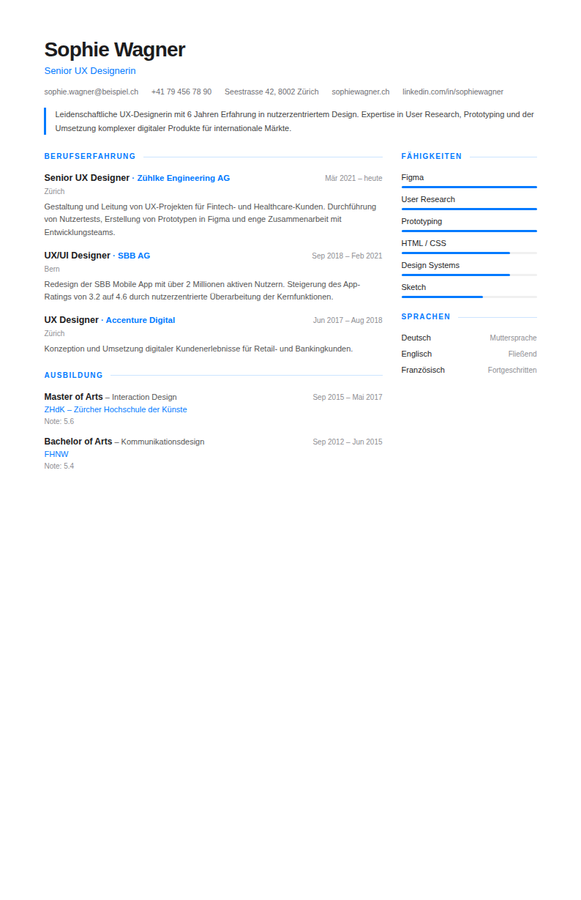
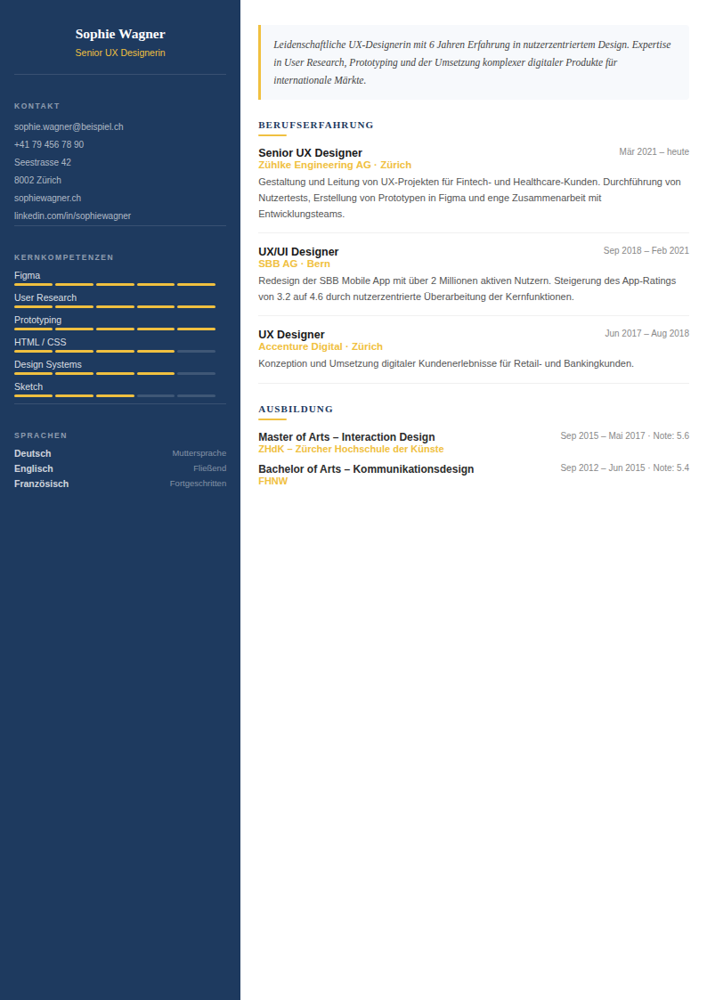
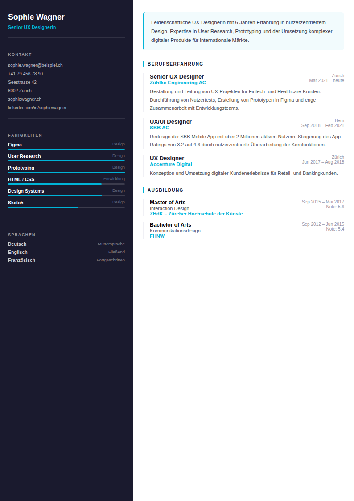
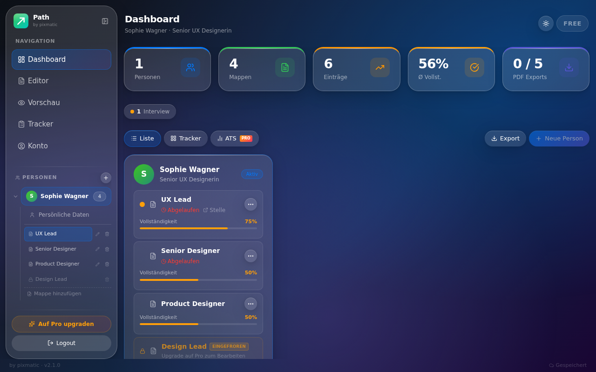
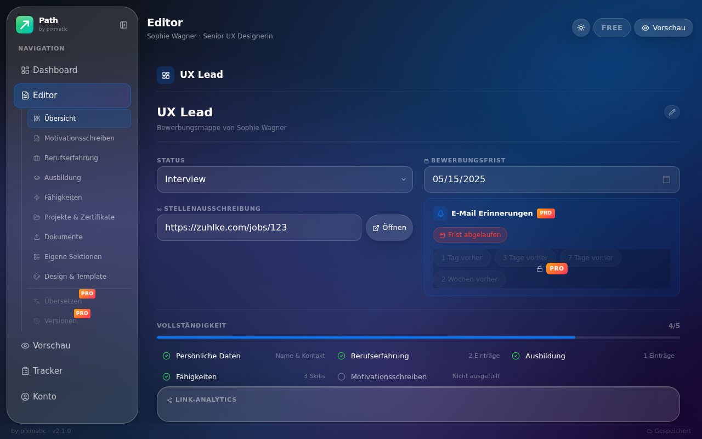

PATH hilft dir, überzeugende Bewerbungsunterlagen zu erstellen — mit modernen Vorlagen, KI-Unterstützung und PDF-Export mit einem Klick.



Von der ersten Idee bis zum fertigen PDF — PATH begleitet dich durch den gesamten Bewerbungsprozess.
Von klassisch bis modern – für jede Branche und jeden Stil. Pixelgenaue PDFs direkt aus dem Browser.
Anschreiben generieren, Texte verbessern und optimieren – powered by Claude AI.
Ein Klick, fertig. Druckfertige PDFs in Sekunden – perfekt für Online-Bewerbungen.
Automatische Übersetzung deines Lebenslaufs in jede Sprache für internationale Stellen.
Speichere Versionen deines CVs und stelle frühere Stände jederzeit wieder her.
Erstelle einen öffentlichen Link zu deinem Lebenslauf – ideal für digitale Bewerbungen.
Behalte den Überblick über alle Bewerbungen — Status, Deadline, Notizen und verknüpfte Unterlagen.
Claude AI – eines der leistungsfähigsten Sprachmodelle der Welt – ist direkt in PATH integriert.
Stelle, Unternehmen und Ton eingeben – Claude AI schreibt in Sekunden ein vollständiges, individuelles Anschreiben.
Bestehende Formulierungen professionell optimieren, umschreiben oder auf Stelle zuschneiden – mit einem Klick.
LinkedIn-Profiltext einfügen – die KI erkennt automatisch Name, Erfahrungen, Ausbildung und Skills.
Den gesamten Lebenslauf in jede Sprache übersetzen – Deutsch, Englisch, Französisch, Italienisch und mehr.
Übersichtliches Dashboard und intuitiver Editor — alles an einem Ort.


Einfach und schnell — ohne komplizierte Software.
Kostenlos registrieren, keine Kreditkarte nötig.
Passende Vorlage für deine Branche und deinen Stil aussuchen.
Lebenslauf ausfüllen, Anschreiben per KI generieren.
Mit einem Klick als druckfertiges PDF exportieren.
Kostenlos starten, bei Bedarf upgraden. Jederzeit kündbar.
Warum PATH die bessere Wahl für deine Bewerbung ist.
"Endlich eine Bewerbungs-App die nicht aussieht wie aus den 90ern — und trotzdem in der Schweiz funktioniert."
"Das KI-Anschreiben hat mir enorm viel Zeit gespart. Erste Bewerbung raus, zwei Tage später Einladung zum Gespräch."
"Ich habe Word-Vorlagen gehasst. PATH macht das so einfach — ausfüllen, Template wählen, PDF runterladen. Fertig."
Alles was du wissen möchtest, bevor du startest.
Erstelle in wenigen Minuten einen Lebenslauf, der überzeugt. Kostenlos, ohne Kreditkarte.